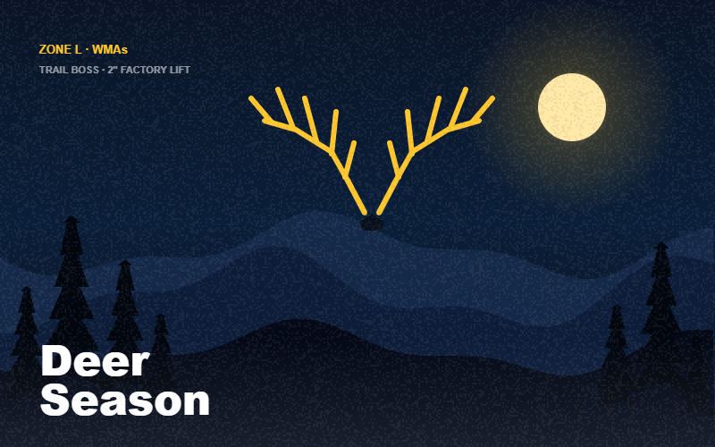
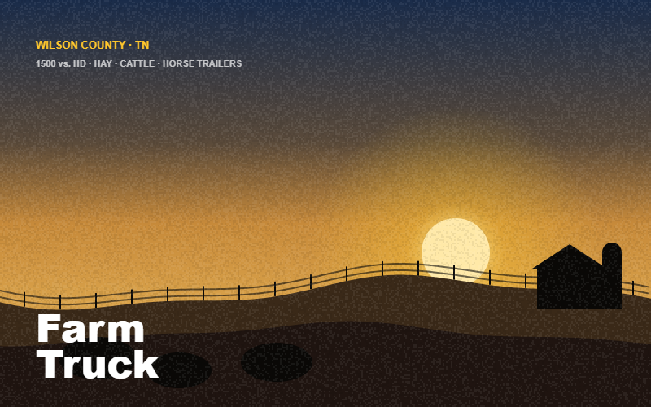
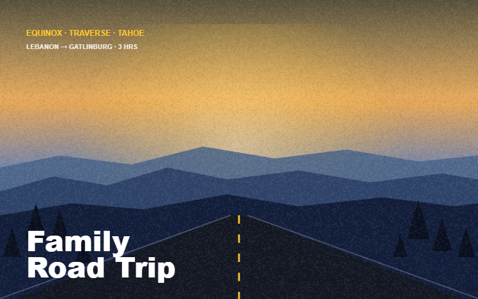
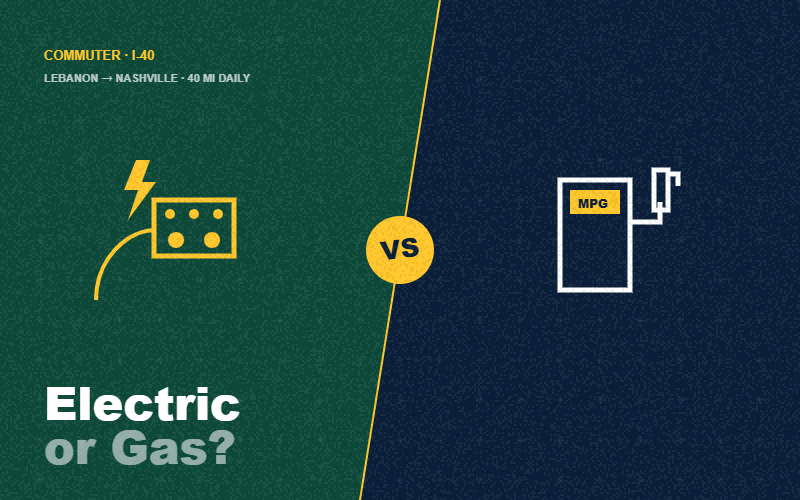
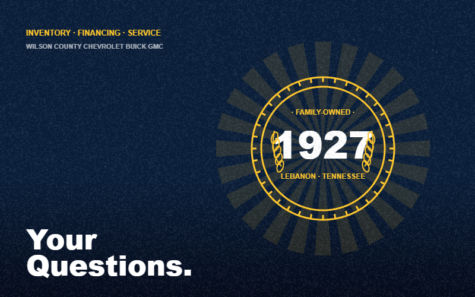

This week's deep dive
The most-asked question from Wilson County truck shoppers — and the one that saves the most money to get right before you visit the lot.
Silverado 1500 vs. Sierra 1500: The Wilson County truck decision, settled.
Same GM T1 platform. Same engines. Same towing. So why does one feel like a work truck and the other like a luxury SUV with a bed? The honest breakdown for farm, hunting, commuting, and towing.
Read the full comparisonAll buying guides
Every guide is written for a specific Middle Tennessee use case — not generic car-blog content.
Silverado 1500 vs. Sierra 1500: which is right for Wilson County?
Same platform, different personalities. A by-trim, by-use-case breakdown for farmers, hunters, commuters, and families across Middle Tennessee.

Best truck for deer hunting in Middle Tennessee: the Trail Boss case.
Factory lift, Rancho shocks, skid plates, all-terrain tires. What the Silverado Trail Boss actually does on the back roads of Cedars of Lebanon & Bridgestone Firestone WMA.

Best farm truck for Wilson County: Silverado 1500 vs. HD.
Hay, cattle, horse trailers, and the Wilson County Fair. Which Silverado handles it — and when the jump to 2500HD is actually worth the money.
Best truck for towing a boat on Old Hickory Lake.
13,300 lbs max tow, trailer brake controllers, and the trim + engine combo Middle Tennessee boaters actually need for summer launch days.

The Middle Tennessee family SUV: Equinox vs. Traverse vs. Tahoe.
Three Chevy SUVs, three very different families. Seating, cargo, towing, and which one fits Lebanon-to-Nashville life.

Equinox EV vs. gas Equinox: the Lebanon→Nashville commute, decided.
40-mile daily commute, home-charging math, and real numbers for the Wilson County I-40 driver comparing electric to gasoline.

Wilson County Chevrolet Buick GMC: frequently asked questions.
Hours, loaners, shuttle service, financing for every credit level, trade-ins, warranty coverage, and what makes us different.
By topic
Not sure where to start? Use the grid below to jump straight to the topic on your mind.
Trucks
SUVs
Local Life
The Dealership
Family-owned. Three generations. One lot.
Chevrolet, Buick, and GMC under one roof in Lebanon — so Wilson County shoppers can drive the Silverado and the Sierra back-to-back, compare the Equinox and the Terrain in one visit, and buy the truck that actually fits, not the one the salesman at the next dealership pushed.